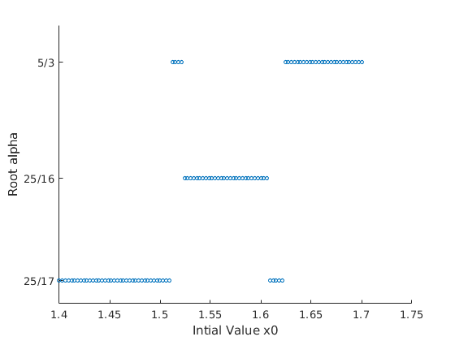

Zachary Kaplan
MATH 340 Assignment 3 2/8/18
Contents
Problem 1
% Polynomial whose root is the golden ratio. f1 = @(phi) phi.^2 - phi - 1; [estimate, err] = bisection(f1, 1, 2, 1e-16); fprintf(['Calculating the Golden Ratio:\n' ... ' Approx: %.15f\n' ... ' Error : %e\n'], estimate, err); fprintf( ' Function Used:\n'); dbtype bisection
Calculating the Golden Ratio:
Approx: 1.618033988749895
Error : 1.776357e-15
Function Used:
1 function [estimate, err] = bisection(f, a, b, tol)
2
3 if f(a) < 0 && f(b) > 0
4 neg = a;
5 pos = b;
6 elseif f(a) > 0 && f(b) < 0
7 neg = b;
8 pos = a;
9 else
10 error('The endpoints must differ in sign!');
11 end
12 n = 1;
13 while abs(pos - neg)/2 > tol
14 mid = (pos + neg) / 2;
15 v = f(mid);
16 if v < 0
17 neg = mid;
18 elseif v > 0
19 pos = mid;
20 else
21 break; % We actually guessed it perfectly (within machine percision).
22 end
23
24 n = n + 1;
25 end
26
27 estimate = (pos + neg) / 2;
28 err = abs(pos - neg) / 2;
29 end
Problem 2
% Polynomial we are working with. f2 = @(x) 816*x.^3 - 3835*x.^2 + 6000*x - 3125; x0 = linspace(1.4, 1.7, 100); alpha = arrayfun(@(x0) newtons(f2, x0, 1e-10), x0); figure scatter(x0, alpha, 10); yticks([25/17 25/16 5/3]); yticklabels({'25/17', '25/16', '5/3'}); xlabel('Intial Value x0'); ylabel('Root alpha'); fprintf('Function Used:\n'); dbtype newtons
Function Used: 1 function [estimate, err, order] = newtons(f, x0, tol) 2 3 syms x; 4 try 5 df = diff(symfun(f(x), x)); 6 catch e 7 % We could handle the error of a non-differentiable f here, but it's not 8 % clear what we could do, so we throw the error up. 9 error(e); 10 end 11 12 prev1_err = inf; 13 prev2_err = inf; 14 15 estimate = x0; 16 err = f(estimate)/double(df(estimate)); 17 18 while abs(err) > tol 19 estimate = estimate - err; 20 prev2_err = prev1_err; 21 prev1_err = err; 22 err = f(estimate)/double(df(estimate)); 23 end 24 25 % Easily derived from the relation e_n = C|e_n-1|^p and 26 % e_n-1 = C|e_n-2|^p. 27 order = log(abs(err/prev1_err))/log(abs(prev1_err/prev2_err)); 28 29 err = abs(err); 30 end
Extra Credit
[r, err, order] = newtons(f1, 1, 1e-10); fprintf(['When calculating the Golden Ratio using Newtons Method:\n' ... ' Approx: %f\n' ... ' Order : %d\n'], r, round(order)); fprintf( ' Function Used:\n'); dbtype newtons
When calculating the Golden Ratio using Newtons Method: Approx: 1.618034 Order : 2 Function Used: 1 function [estimate, err, order] = newtons(f, x0, tol) 2 3 syms x; 4 try 5 df = diff(symfun(f(x), x)); 6 catch e 7 % We could handle the error of a non-differentiable f here, but it's not 8 % clear what we could do, so we throw the error up. 9 error(e); 10 end 11 12 prev1_err = inf; 13 prev2_err = inf; 14 15 estimate = x0; 16 err = f(estimate)/double(df(estimate)); 17 18 while abs(err) > tol 19 estimate = estimate - err; 20 prev2_err = prev1_err; 21 prev1_err = err; 22 err = f(estimate)/double(df(estimate)); 23 end 24 25 % Easily derived from the relation e_n = C|e_n-1|^p and 26 % e_n-1 = C|e_n-2|^p. 27 order = log(abs(err/prev1_err))/log(abs(prev1_err/prev2_err)); 28 29 err = abs(err); 30 end